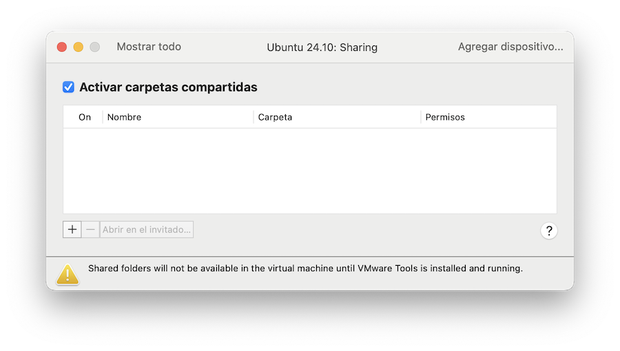
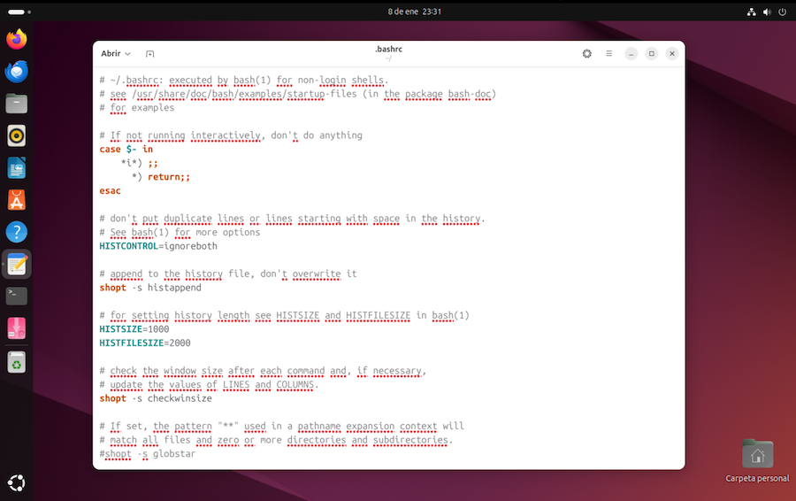

Ajustes¶
Una vez instalado el sistema operativo Linux, vamos a configurarlo a nuestro gusto.
VMWare Tools¶
El sistema operativo Linux no es consciente de estar ejecutándose en una máquina virtual, por lo que algunas opciones proporcionadas por VMWare podrían no funcionar. Quizás haya características que den problemas, como copiar y pegar de una máquina a otra, o compartir carpetas.
Para solucionar esto, tenemos que instalar en la máquina virtual un programa llamado "VMWare Tools", que nos proporciona funciones tales como:
- Rendimiento de gráficos considerablemente más rápido
- Carpetas compartidas entre el host y el guest
- Copiar y pegar entre la máquina virtual y el escritorio del host
- Mejora del rendimiento del ratón
- Sincronización del reloj de la máquina virtual con el reloj del escritorio del host o del cliente
Algunas distribuciones Linux incorporan un programa alternativo llamado Open-VM-Tools, que suele estar más adaptado a esa distribución en particular. Lo podemos encontrar en el repositorio de programas. Abrimos Synaptic, y buscamos el paquete Open-VM-Tools. Seguramente, ya viene instalado de serie, por lo que no hay que hacer nada. Si no es así, instalarlo desde Synaptic.
En el proceso de instalación de la versión Server de Ubuntu, ya hicimos esto mismo mediante los comandos:
$ sudo apt install open-vm-tools
$ sudo apt install open-vm-tools-desktop
Para que tenga efecto, habrá que reiniciar la máquina virtual.
Carpetas compartidas¶
Una vez comprobado que tenemos VMWare Tools, podemos establecer determinadas carpetas a compartir entre ambas máquinas, la física y la virtual. Hay que que acudir a la configuración de la máquina virtual y seleccionar el apartado Compartir:

Podemos añadir o quitar carpetas de la lista pulsando los botones + o -. Podemos ponerlas como de solo lectura (para la máquina guest) o bien, de lectura y escritura.
Para acceder desde la máquina Linux tenemos que asociar esa carpeta compartida a una carpeta en la estructura de directorios de Linux, lo que actuará como "punto de montaje". Véase más información en el siguiente artículo:
https://kb.vmware.com/s/article/60262
La versión Open-VM-Tools no monta automáticamente las carpetas compartidas, y tenemos que hacerlo a mano cada vez que iniciamos la máquina virtual Linux. Esto resulta más seguro, ya que limita la exposición de nuestra máquina host, pero puede ser un incordio. Para automatizar el montaje de una carpeta, vamos a modificar el archivo de configuración de puntos de montaje, /etc/fstab.
Puntos de montaje
Todos los discos conectados se asocian a una carpeta dentro de la estructura general de directorios. El archivo /etc/fstab contiene la lista de puntos de montaje. Cada entrada de la lista representa un disco. En la máquina virtual, las carpetas compartidas de la máquina Host se visualizan como discos externos, accediendo como haríamos con un DVD, por ejemplo.
¡Cuidado!
Modificar manualmente la configuración del sistema tiene sus riesgos. En este caso, si cambiamos los puntos de montaje de los discos, puede que la máquina virtual deje de funcionar por no ser capaz de acceder a ningún disco.
Puede ser una buena idea hacer previamente un snapshot de la máquina virtual, como se explicaba en un capítulo anterior.
Abrimos el terminal de comandos e iniciamos el editor de textos con privilegios de administrador activados. El comando es:
$ sudo gnome-text-editor /etc/fstab
Al editor de textos le estamos pasando como argumento el fichero a modificar. El texto del fichero es algo así como:
# /etc/fstab: static file system information.
#
# Use 'blkid' to print the universally unique identifier for a
# device; this may be used with UUID= as a more robust way to name devices
# that works even if disks are added and removed. See fstab(5).
#
# <file system> <mount point> <type> <options> <dump> <pass>
# / was on /dev/nvme0n1p2 during curtin installation
/dev/disk/by-uuid/ef97ec66-b574-4c9f-ad26-7e6edbec7a9c / ext4 defaults 0 1
# /boot/efi was on /dev/nvme0n1p1 during curtin installation
/dev/disk/by-uuid/41F5-383E /boot/efi vfat defaults 0 1
/swap.img none swap sw 0 0
Bien. Esto es un poco técnico. Cada línea de este archivo describe un punto de montaje, y las líneas que comienzan con # serán ignoradas. Se usan como documentación.
Añadimos la siguiente línea al final del texto del archivo:
vmhgfs-fuse /mnt/compartidas fuse defaults,allow_other 0 0
Lo que estamos especificando con esta línea añadida es:
- que tenemos un dispositivo llamado
vmhgfs-fuse. Es el nombre que VMWare usa para referirse a las carpetas compartidas. - que lo queremos montar en
/mnt/compartidas - que el tipo de disco es
fuse, algo propio de VMWare - el resto de parámetros son opciones de montaje
Típicamente, el directorio /mnt se usa para montar dispositivos externos, aunque para DVDs y cosas así se utiliza /media. El sistema creará automáticamente una nueva carpeta /mnt/compartidas, donde tendremos acceso a las carpetas compartidas con la máquina física. Es decir, si compartimos dos carpetas de la máquina física, carpeta1 y carpeta2, el acceso será mediante:
/mnt/compartidas/carpeta1
/mnt/compartidas/carpeta2
Para que todo esto funcione, hay que reiniciar la máquina. Seguidamente comprobamos el acceso a esas carpetas abriendo el explorador de archivos, e introduciendo la ruta /mnt.
Nota importante
Compartir carpetas con la máquina física no está exento de riesgos. Los cambios que hagamos en una máquina se reflejarán en la otra, pero puede haber interferencias. Por ejemplo, la papelera de reciclaje de la máquina física no es accesible para la máquina virtual. Si intentamos eliminar un archivo de una carpeta compartida desde la máquina virtual, el borrado será definitivo. Este tipo de operaciones conviene hacerlas desde la máquina física.
En el explorador de archivos Nautilus podemos crear un enlace en la barra lateral para acceder cómodamente a las carpetas compartidas.
Montar y desmontar carpetas compartidas¶
Configurar el archivo /etc/fstab para que las carpetas compartidas se monten automáticamente en el directorio /mnt/compartidas puede no ser lo ideal, ya que deja esas carpetas de la máquina física expuestas a las acciones de la máquina virtual.
Alternativamente, podemos montar y desmontar manualmente las carpetas, solo cuando necesitemos tener acceso a ellas. Para montar todas las carpetas configuradas para ser compartidas, escribimos el comando:
$ sudo /usr/bin/vmhgfs-fuse .host:/ /mnt/compartidas -o subtype=vmhgfs-fuse,allow_other
Siendo:
sudoindica ejecutar con permisos de administrador del sistema/usr/bin/vmhgfs-fusees el programa que gestiona las carpetas compartidas. Forma parte de VM-Tools../host:/indica todas las carpetas compartidas/mnt/compartidases el directorio de la máquina virtual donde vamos a acceder al contenido- el resto son opciones de configuración
Si queremos montar solo una carpeta física, escribir:
$ sudo /usr/bin/vmhgfs-fuse .host:/micarpeta /mnt/compartidas/micarpeta -o subtype=vmhgfs-fuse,allow_other
para desmontar las carpetas y cortar el acceso a ellas:
$ sudo umount /mnt/compartidas
Personalizar el escritorio¶
La configuración del sistema nos permite personalizar el aspecto que tiene el escritorio:
-
Para cambiar el fondo de escritorio, descargamos algún fondo de escritorio que nos guste (por ejemplo, desde Pixabay o desde Pexels), y en la aplicación "Configuración del Sistema" buscamos el apartado Apariencia > Fondos de Escritorio > Añadir imagen. Tomamos la imagen de la carpeta de Descargas, añadiéndola a los fondos de escritorio, y la seleccionamos como fondo.
-
En el apartado Apariencia > Estilo seleccionar un color para iconos, ventanas, etc.
-
Para ocultar o mostrar la carpeta personal en el escritorio, ir a la Configuración > Iconos > Mostrar carpeta personal.
Bloqueo de pantalla¶
En el caso de inactividad, la pantalla se bloquea y nos obliga a introducir la contraseña para desbloquearla. Tratándose de una máquina virtual, esta opción ya la tenemos en la física. Para desactivar los bloqueos, en la configuración del sistema, ir a la configuración del sistema, apartado Privacidad y Seguridad > Retardo para apagar la pantalla = Nunca.
Gestión de usuarios¶
Podemos cambiar nuestra password, crear y eliminar usuarios, o cambiar la forma de inicio de sesión (automático o con contraseña). Para estas labores, ir a la configuración del sistema, apartado Sistema > Usuarios.
Cambios en el Terminal¶
Cada escritorio proporciona su propia emulación de Terminal. Ubuntu toma prestado el Terminal de Gnome, que muestra una ventana con una emulación de la consola de comandos, y un menú en la barra superior. La opción Preferencias permite configurar su funcionamiento.
Podemos configurar los atajos de teclado con la opción Global > Atajos. Para asignar una combinación de teclas a una acción:
- seleccionar la acción deseada
- pulsar Enter. Aparecerá un mensaje Acelerador nuevo
- pulsar la combinación de teclas a asignar
Para desactivar un atajo
- seleccionar la acción deseada
- pulsar Enter. Aparecerá un mensaje Acelerador nuevo
- pulsar la tecla retroceso Backspace
Además de la configuración general, podemos tener varias configuraciones personalizadas. Cada una de ellas es un "Perfil". En principio hay uno llamado "Sin nombre". Para editar un perfil, seleccionarlo. Podemos cambiar:
-
Aspecto del texto. Inicialmente el Terminal se configura con un tamaño de 80 columnas y 24 líneas, tipo de letra monospace. El cursor puede mostrarse como bloque o subrayado, bajo el carácter actual, o como linea vertical entre dos caracteres.
El sonido de alerta se puede activar o silenciar.
-
Colores. Pueden ser los del sistema, usados en todas las aplicaciones, o los que deseemos, personalizando el aspecto del Terminal
-
Podemos configurar el desplazamiento del texto hacia arriba, de forma que la información no se pierda al añadir más texto en las líneas inferiores del terminal
-
Podemos configurar el programa que se ejecuta inicialmente dentro de la ventana de Terminal. Por defecto es el intérprete de comandos.
-
Compatibilidad. Por defecto se usa la codificación UTF-8, lo que permite toda clase de caracteres, la eñe, vocales acentuadas, y todo tipo de símbolos, emojis, etc.
Ver Manual del Terminal de Gnome.
El prompt¶
Personalmente, hay una cosa que no me gusta del Terminal de comandos: el prompt.
Si por ejemplo estamos en una carpeta /home/usuario/documentos/carpetadedocumentos/, el prompt será algo así como:
nombreusuario@nombremaquina:/home/usuario/documentos/carpetadedocumentos$
Esto recorta bastante espacio para el comando a introducir, y es una información que generalmente no resulta necesario tenerla presente continuamente. Podemos averiguar la carpeta actual con el comando print working directory:
$ pwd
El nombre de usuario se puede obtener con el comando who am i (sin espacios):
$ whoami
Podemos averiguar información del sistema con el comando uname seguido del parámetro -a (all):
$ uname -a
La información mostrada incluye el sistema operativo y el nombre de la máquina.
Por otra parte, toda esta información se suele mostrar en la barra de título de la ventana del Terminal, por lo que podríamos ahorrar espacio si cambiamos el aspecto del prompt. A mi me gusta que solo refleje la carpeta actual, eliminando el nombre de usuario y la máquina.
La configuración del prompt se establece en el archivo ~/.bashrc. Recordemos que el directorio ~ es la carpeta raíz del usuario. El archivo .bashrc lleva un punto como prefijo, lo que en sistemas tipo Unix indica un fichero oculto.
Comenzamos por abrir el explorador de Archivos, nos situamos en la carpeta raíz del usuario y pulsamos en la opción de menú Mostrar archivos ocultos. Aparecerá un archivo .bashrc. Con ese archivo seleccionado, pulsamos con el botón secundario del ratón, y en el menú desplegable seleccionamos Copiar. Hacemos una copia del archivo en la misma carpeta.
Ahora tenemos dos archivos, .bashrc y .bashrc (copia). Este segundo nos servirá de respaldo si rompemos algo. En caso de apuro, borraremos el .bashrc y renombraremos .bashrc (copia) para que vuelva a llamase .bashrc.
Hacemos doble clic sobre .bashrc. Es un archivo de texto que se abrirá en el editor de textos:

Esto resulta bastante técnico, pero ¿quien dijo miedo? Comenzamos por localizar las líneas de texto que configuran el prompt:
if [ "$color_prompt" = yes ]; then
PS1='${debian_chroot:+($debian_chroot)}\[\033[01;32m\]\u@\h\[\033[00m\]:\[\033[01;34m\]\w\[\033[00m\]\$ '
else
PS1='${debian_chroot:+($debian_chroot)}\u@\h:\w\$ '
fi
La que tiene efecto es la segunda línea, ya que el terminal admite coloreado:
PS1='${debian_chroot:+($debian_chroot)}\[\033[01;32m\]\u@\h\[\033[00m\]:\[\033[01;34m\]\w\[\033[00m\]\$ '
Esta secuencia de parámetros indican al Terminal los datos a mostrar en el prompt y los códigos de color a aplicar. Los parámetros que nos interesan son:
\umuestra el usuario (user). Va seguido de un carácter@a mostrar\hmuestra el nombre de máquina (host). Va seguido de un código de color y los dos puntos:a mostrar\wmuestra el directorio de trabajo (working directory)\$muestra el carácter$a mostrar. Va seguido de un espacio en blanco, que también se mostrará.
Las secuencias intermedias como \[\033[01;33m\] establecen los colores de cada elemento del prompt:
-
la que precede a
\ues este caso es\[\033[00;31m\], que indica un color verde. Cambiando00por01se muestra en verde intenso. -
la secuencia que precede a
\wes\[\033[01;34m\], que especifica un color azul. -
para recuperar el color por defecto se usa la secuencia
\[\033[00m\]
Los códigos de color son:
\033[0;30m\]- Black\033[0;31m\]- Red\033[0;32m\]- Green\033[0;33m\]- Brown\033[0;34m\]- Blue\033[0;35m\]- Purple\033[0;36m\]- Cyan\033[0;37m\]- Light gray
Véase que los códigos van de 30 a 37. Cambiando el 0 por un 1, tendremos colores más intensos:
\033[1;30m\]- Dark gray\033[1;31m\]- Light red\033[1;32m\]- Light green\033[1;33m\]- Yellow\033[1;34m\]- Light blue\033[1;35m\]- Light purple\033[1;36m\]- Light cyan\033[1;37m\]- White
Vamos a duplicar la segunda línea del texto, y a la original le ponemos un # para anularla. Todas las líneas que empiezan con este carácter son ignoradas, y se usan para añadir comentarios, o en nuestro caso, como respaldo de lo que teníamos antes, por si queremos recuperar la configuración anterior.
if [ "$color_prompt" = yes ]; then
# PS1='${debian_chroot:+($debian_chroot)}\[\033[01;32m\]\u@\h\[\033[00m\]:\[\033[01;34m\]\w\[\033[00m\]\$ '
PS1='${debian_chroot:+($debian_chroot)}\[\033[01;32m\]\u@\h\[\033[00m\]:\[\033[01;34m\]\w\[\033[00m\]\$ '
else
PS1='${debian_chroot:+($debian_chroot)}\u@\h:\w\$ '
fi
Ahora la tercera línea es la que tiene efecto. Vamos a modificarla. La primera parte del prompt solo tiene efecto en situaciones muy especiales, y la dejaremos tal cual:
${debian_chroot:+($debian_chroot)}
Suprimimos la visualización del nombre de usuario, que va precedida por los códigos de color y muestra un @ añadido:
\[\033[01;32m\]\u@
También suprimimos el nombre de la máquina:
\h\[\033[00m\]:
Dejamos la visualización del directorio de trabajo:
\[\033[01;34m\]\w
Y el restaurado de color por defecto y símbolo $:
\[\033[00m\]\$
Con lo que la cosa queda así:
PS1='${debian_chroot:+($debian_chroot)}\[\033[01;32m\]\w\[\033[00m\]\$ '
Es decir:
if [ "$color_prompt" = yes ]; then
# PS1='${debian_chroot:+($debian_chroot)}\[\033[01;32m\]\u@\h\[\033[00m\]:\[\033[01;34m\]\w\[\033[00m\]\$ '
PS1='${debian_chroot:+($debian_chroot)}\[\033[01;32m\]\w\[\033[00m\]\$ '
else
PS1='${debian_chroot:+($debian_chroot)}\u@\h:\w\$ '
fi
Tras guardar los cambios, cerramos la ventana del Terminal (si la teníamos abierta) y volvemos abrirla. El prompt debería mostrarse con la nueva configuración:
~$